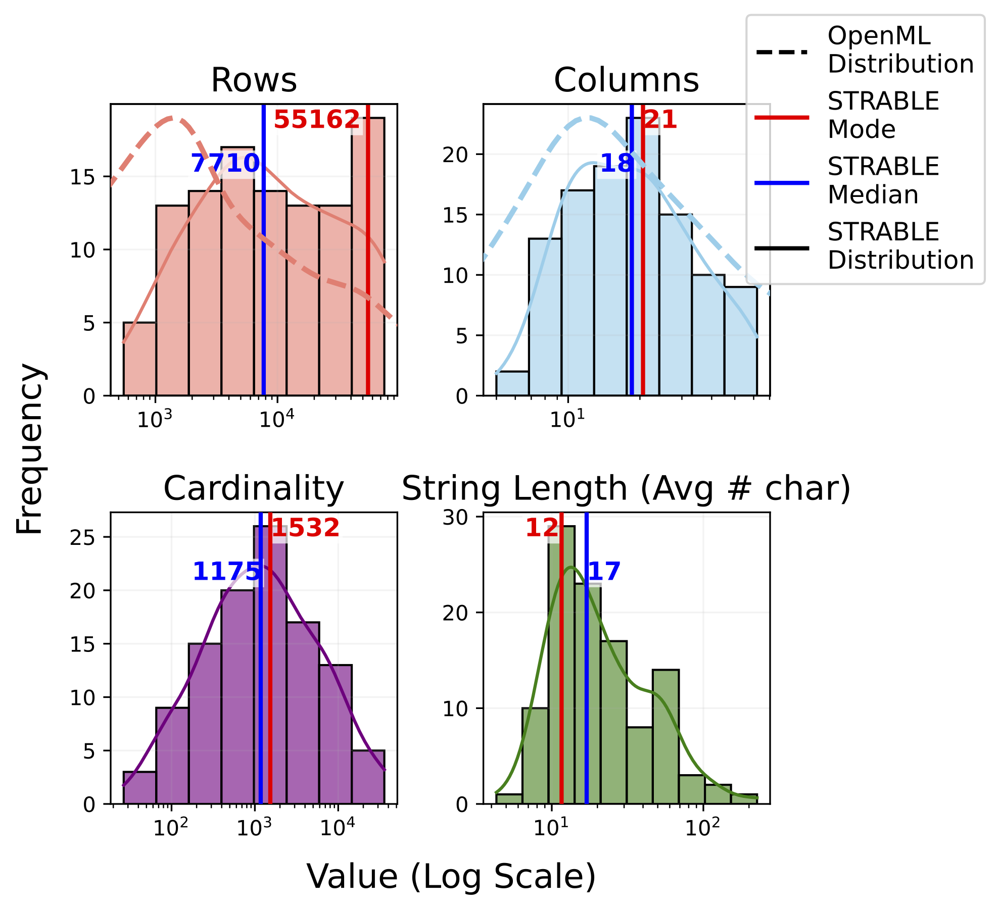
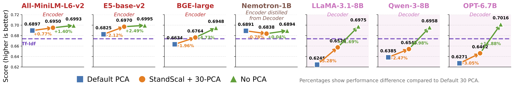
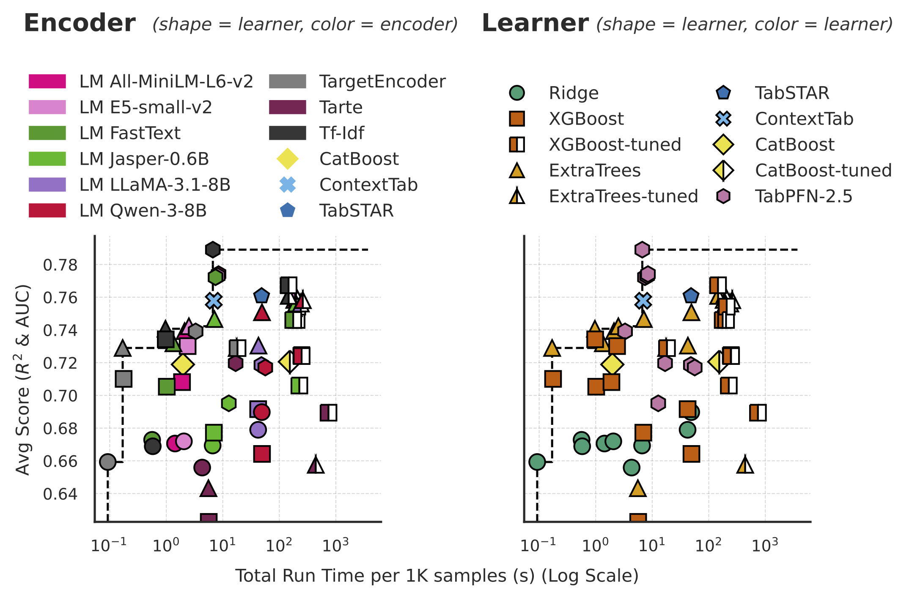
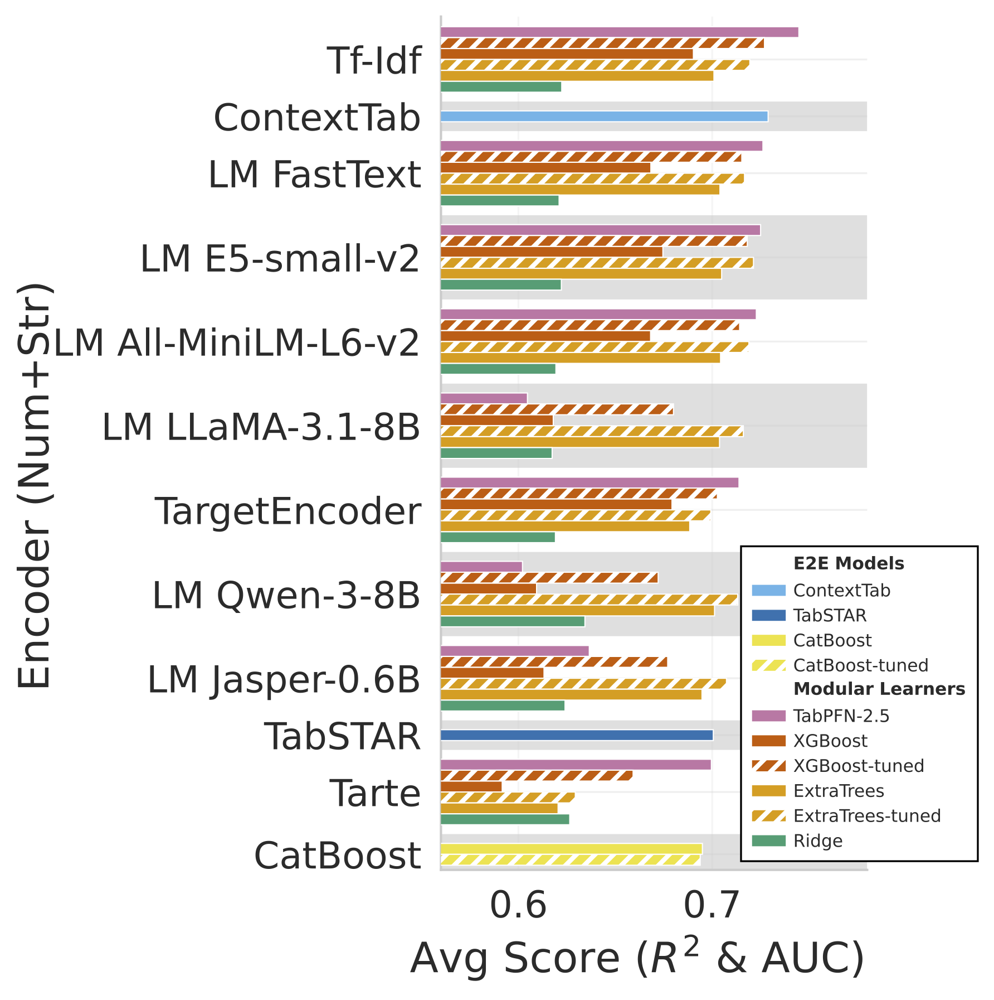
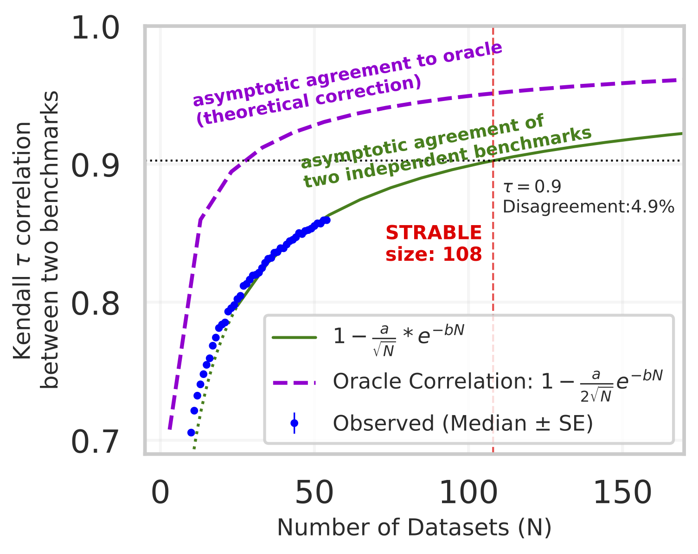

STRABLE: Benchmarking Tabular Machine Learning with Strings
Abstract
Benchmarking tabular data has revealed the benefit of dedicated architectures, pushing the state of the art. But real-world tables often contain string entries, beyond numbers. These settings have been understudied due to a lack of a solid benchmarking suite. They lead to new research questions: Are dedicated learners needed, with end-to-end modeling of strings and numbers? Or does it suffice to encode strings as numbers, as with a categorical encoding? And if so, do the resulting tables resemble numerical tabular data, calling for the same learners?
To enable these studies, we contribute STRABLE, a comprehensive benchmarking corpus of 108 tables with strings and numbers, all carefully curated learning problems across diverse application fields. We run the first large-scale empirical study of tabular learning with strings. We study many pipelines: end-to-end or tabular learning with string encoding, spanning the complexity of methods, from categorical encoding to LLMs, from ridge to TabPFN.
We find that, on typical tables, it works best to use sophisticated tabular learners with comparatively simpler string embedding methods. Finally, we show that STRABLE is a good set of tables to study "string tabular" learning as it leads to generalizable rankings of methods: it contains enough tables to approach expected ranks, and is stable across application fields. STRABLE provides a foundation for research on tabular learning with strings, an important yet understudied area.
1. Datasets' Metadata Distribution

Datasets’ metadata distribution. Cardinality and String length were extracted for string columns. Histograms and fitted lines refer to the STRABLE distribution, while dashed lines refer to the OpenML distribution.
2. Strings are Pivotal for Tabular Learning

Performance by learner, averaged across all encoders. The introduction of string features bring marked improvements to numeric-only baseline. Note that E2E models present a wider 95% confidence interval, being based on the performance of their internal encoding solution.
3. The Performance vs. Compute Trade-off

Trade-off between prediction performance and run time, colored by encoder on the left and by learner on the right. The dotted line gives the pareto-optimality frontier. Encoders explain much of the runtime: for a given encoder, prediction performance varies broadly depending on the learner while the runtime varies much less (aside from the choice of tuning or not). Simple and advanced learners benefit differently from varying encoders: for a simple learner such as ridge, more complex encoders improve prediction performance. But as the learners get more sophisticated, their prediction performance drops with the most complex encoders (as with TabPFN-2.5).
4. Performance by Encoder and Learner

Performance by encoder and learner on all features (Num+Str), ordered by mean encoder performer across learners. Figure E.12 mirrors this figure, but clipping to 0 all negative R2 scores to mitigate the effect of very poor predictions in regression.
5. Benchmark Convergence to Oracle Rank

Expected Kendall-τ convergence of two benchmarks and single benchmark to the oracle rank. The green curve is fitted on the observed Kendall-τ correlations between two independent benchmarks (blue points). The purple curve is computed through the same optimized parameters of the green curve: a and b. The blue data points represent the empirical agreement between disjoint benchmarks of varying sizes, generated via a sub-sampling procedure detailed in the appendix (see Figure E.11). The saturation curve of the agreement is derived in Appendix A.
BibTeX
@unpublished{strable2026,
title={STRABLE: Benchmarking Tabular Machine Learning with Strings},
author={Anonymous Authors},
year={2026}
}